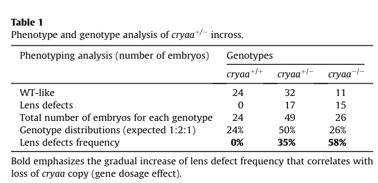

Zebrafish alpha-crystallin A chain (cryaa) is a member of the small heat shock protein (sHSP/HSP20) family. It is a 173-amino acid protein predominantly expressed in the lens, with very low expression in liver and spleen (PMID:11925526). Like its mammalian ortholog, zebrafish cryaa functions as an ATP-independent molecular chaperone (holdase) that binds denaturing/unfolding proteins and prevents their aggregation, without actively refolding them (PMID:15692462, PMID:22479631). It forms large oligomers and its chaperone-like activity is regulated by hydrophobicity and temperature-dependent subunit exchange dynamics (PMID:22479631). In the lens, cryaa serves a dual role as both a structural protein contributing to lens transparency and refractive properties, and as a chaperone that prevents crystallin aggregation and cataract formation (PMID:16728471). Morpholino knockdown and knockout studies demonstrate that cryaa is required for normal lens development, where it prevents gamma-crystallin insolubility and maintains lens fiber cell differentiation (PMID:16728471, PMID:26149094). The zebrafish cryaa shares 73% amino acid identity with human CRYAA and has conserved chaperone function, though with lower thermal stability reflecting adaptation to lower physiological temperature (PMID:15692462, PMID:22479631). A crystal structure of the alpha-crystallin domain (PDB: 3N3E) has been resolved at 1.75 angstrom resolution. The protein contains zinc-binding residues at positions 101, 103, and 108.
| GO Term | Evidence | Action | Reason |
|---|---|---|---|
|
GO:0043066
negative regulation of apoptotic process
|
IBA
GO_REF:0000033 |
KEEP AS NON CORE |
Summary: IBA annotation based on phylogenetic inference from mammalian alpha-crystallins (CRYAA, CRYAB, HSP27/HSPB1) which have documented anti-apoptotic roles. The anti-apoptotic function of alpha-crystallins is well-established for mammalian orthologs. While not directly demonstrated for zebrafish cryaa, the phylogenetic inference is reasonable given the high conservation of the protein. However, this is not a core molecular function of cryaa but rather a downstream biological process consequence of its chaperone activity.
Reason: Anti-apoptotic activity is a recognized function of the sHSP family but represents a downstream biological process rather than a core molecular function. The IBA inference is phylogenetically sound, propagated from mammalian orthologs with documented anti-apoptotic roles. Retained as non-core since the primary function is chaperone/holdase activity and structural role in the lens.
|
|
GO:0005737
cytoplasm
|
IBA
GO_REF:0000033 |
ACCEPT |
Summary: IBA annotation for cytoplasmic localization, supported by phylogenetic inference from multiple orthologs across fly, worm, and vertebrate species. Consistent with UniProt subcellular location annotation (Cytoplasm) and the known biology of sHSPs as cytoplasmic chaperones. Alpha-crystallins are abundant cytoplasmic proteins in lens fiber cells (PMID:11925526).
Reason: Cytoplasmic localization is well-established for alpha-crystallins. cryaa is a cytoplasmic protein abundant in lens fiber cells. The IBA inference is consistent with UniProt annotation and the known biology of the protein.
Supporting Evidence:
PMID:11925526
We detected high expression of zebrafish alphaA-crystallin in the lens and very low expression in liver and spleen.
file:DANRE/cryaa/cryaa-deep-research-falcon.md
Within the retrieved primary literature set, I did **not** find direct experimental evidence specifying Cryaa's **subcellular localization** (e.g., cytosolic vs membrane‑bound fractions, nuclear association) in zebrafish lens cells; the evidence supports **lens‑cell type localization** rather than intracellular compartment localization.
|
|
GO:0005634
nucleus
|
IBA
GO_REF:0000033 |
KEEP AS NON CORE |
Summary: IBA annotation for nuclear localization based on phylogenetic inference. Some mammalian sHSPs including CRYAA, CRYAB, and HSPB1 have been reported to translocate to the nucleus under stress conditions. However, nuclear localization is not the primary site of action for alpha-crystallins and is likely a secondary or stress-dependent localization. Falcon deep research found no direct zebrafish evidence for nuclear association (or any intracellular-compartment resolution) for Cryaa, consistent with treating this as a non-core, inference-only localization.
Reason: Nuclear localization has been reported for some mammalian alpha-crystallin orthologs, and the IBA inference is phylogenetically supported. However, this is not the primary localization for cryaa, which functions predominantly in the cytoplasm of lens fiber cells. Falcon deep research explicitly found no zebrafish experimental support for nuclear localization. Retained as non-core.
Supporting Evidence:
file:DANRE/cryaa/cryaa-deep-research-falcon.md
Within the retrieved primary literature set, I did **not** find direct experimental evidence specifying Cryaa's **subcellular localization** (e.g., cytosolic vs membrane‑bound fractions, nuclear association) in zebrafish lens cells; the evidence supports **lens‑cell type localization** rather than intracellular compartment localization.
|
|
GO:0009408
response to heat
|
IBA
GO_REF:0000033 |
ACCEPT |
Summary: IBA annotation for involvement in heat stress response, inferred from the well-characterized heat shock response function of the sHSP family across fly, worm, and vertebrate species. Alpha-crystallins are members of the small heat shock protein family and their chaperone-like activity increases with temperature (PMID:22479631). Zebrafish cryaa shows temperature-dependent chaperone activity consistent with this annotation.
Reason: cryaa belongs to the small heat shock protein family (HSP20) and its chaperone-like activity is temperature-regulated (PMID:22479631). The IBA inference from sHSP family members is phylogenetically well-supported. Response to heat is a core function of the sHSP family.
Supporting Evidence:
PMID:22479631
Small heat shock proteins (sHsps) maintain cellular homeostasis by preventing stress and disease-induced protein aggregation.
PMID:15692462
The vertebrate small heat shock proteins alphaA- and alphaB-crystallin contribute to the transparency and refractive power of the lens and may also prevent the aggregation of non-native proteins that would otherwise lead to cataracts.
file:DANRE/cryaa/cryaa-deep-research-falcon.md
The target gene **cryaa** in **Danio rerio (zebrafish)** encodes **αA‑crystallin**, a member of the **small heat shock protein (sHSP/HSP20) family** that functions as an ATP‑independent molecular chaperone in the ocular lens.
|
|
GO:0042026
protein refolding
|
IBA
GO_REF:0000033 |
MODIFY |
Summary: IBA annotation for involvement in protein refolding, inferred from Drosophila sHSP orthologs. However, alpha-crystallins function specifically as holdases, not foldases. They bind denaturing proteins to prevent aggregation but do not actively refold them. The chaperone-like activity assays in PMID:15692462 and PMID:22479631 specifically measure prevention of aggregation, not refolding. Alpha-crystallins sequester unfolded substrates in a non-aggregation-prone state but require ATP-dependent chaperones (like Hsp70) for subsequent substrate refolding.
Reason: Alpha-crystallins are holdase chaperones that prevent aggregation of unfolded proteins but do not catalyze refolding. GO:0042026 protein refolding implies active refolding activity, which is inaccurate for cryaa. The protein prevents aggregation rather than restoring native conformation. A more appropriate term would capture the holdase/aggregation-prevention function. The IBA inference likely propagated from Drosophila sHSPs where the distinction between holdase and foldase activity may not have been well-captured.
Proposed replacements:
unfolded protein binding (retain until holdase NTR is created)
Supporting Evidence:
PMID:22479631
Alphacrystallin oligomers are thought to prevent protein aggregation by releasing subunits that block the attraction of hydrophobic regions on partially unfolded proteins [21], although there is some evidence that chaperone-like activity results from binding of the intact oligomer [22].
PMID:15692462
The chaperone-like activities of the two zebrafish alpha-crystallins were highly divergent, with alphaA-crystallin showing much greater activity than alphaB-crystallin.
file:DANRE/cryaa/cryaa-deep-research-falcon.md
α‑Crystallins are sHSPs that **bind destabilized proteins and inhibit their aggregation**, supporting **proteostasis** in the unusually protein‑dense lens environment.
|
|
GO:0051082
unfolded protein binding
|
IBA
GO_REF:0000033 |
MODIFY |
Summary: IBA annotation for unfolded protein binding based on phylogenetic inference from multiple alpha-crystallin orthologs. GO:0051082 is slated for obsoletion as part of the GO:0051082 obsoletion project. The actual molecular function of cryaa is holdase chaperone activity -- it binds unfolded/denaturing proteins to prevent their aggregation without active refolding, functioning in situ rather than escorting proteins between compartments. GO:0140309 (unfolded protein carrier activity) is the recommended replacement, though the carrier/escort semantics are debatable for in-situ holdases like crystallins that sequester unfolded substrates in place.
Reason: GO:0051082 is being obsoleted. The molecular function of cryaa is to bind and sequester unfolded proteins to prevent aggregation (holdase activity). GO:0140309 (unfolded protein carrier activity) is the recommended replacement term within the GO:0051082 obsoletion project. While the carrier semantics imply escorting between compartments which does not perfectly describe in-situ holdase activity, GO:0140309 is the best available replacement that captures the holdase chaperone function.
Proposed replacements:
unfolded protein binding (retain until holdase NTR is created)
Supporting Evidence:
PMID:15692462
alphaA-crystallin serves a similar physiological function in both zebrafish and mammals as a lens specific chaperone-like molecule.
PMID:22479631
Small heat shock proteins (sHsps) maintain cellular homeostasis by preventing stress and disease-induced protein aggregation.
file:DANRE/cryaa/cryaa-deep-research-falcon.md
α‑Crystallins are sHSPs that **bind destabilized proteins and inhibit their aggregation**, supporting **proteostasis** in the unusually protein‑dense lens environment.
|
|
GO:0002088
lens development in camera-type eye
|
IBA
GO_REF:0000033 |
ACCEPT |
Summary: IBA annotation for lens development, inferred phylogenetically from mouse CRYAA. This is strongly supported by direct experimental evidence in zebrafish showing that cryaa is required for normal lens development (PMID:26149094, PMID:16728471). Morpholino knockdown and knockout of cryaa cause lens abnormalities including increased reflectance and gamma-crystallin insolubility.
Reason: Lens development is a core biological process for cryaa. The IBA inference is well-supported by direct experimental evidence in zebrafish from both knockdown and knockout studies (PMID:16728471, PMID:26149094). This is also supported by IMP evidence in the GOA.
Supporting Evidence:
PMID:26149094
These findings demonstrate that the role of α-crystallins in lens development is conserved from mammals to zebrafish and set the stage for using the embryonic lens as a model system to test mechanistic aspects of α-crystallin chaperone activity and to develop strategies to fine-tune protein-protein interactions in aging and cataracts.
PMID:16728471
these results indicate that alphaA-crystallin expression is required for normal lens development and demonstrate that cataract formation can be prevented in vivo.
file:DANRE/cryaa/cryaa-deep-research-falcon.md
**Zou et al. 2015** (Sep 2015; Experimental Eye Research) concluded that αA‑crystallin has a **conserved role in zebrafish embryonic lens development** and that genetic loss produces **lens abnormalities including increased reflectance** (reduced transparency), with a more consistent and severe phenotype in maternal/zygotic mutants compared with morpholino knockdown.
|
|
GO:0005212
structural constituent of eye lens
|
IEA
GO_REF:0000120 |
ACCEPT |
Summary: IEA annotation based on InterPro domain match (IPR003090 Alpha-crystallin_N) and UniProt keyword (KW-0273 Eye lens protein). Alpha-crystallins are among the most abundant structural proteins in the vertebrate lens, contributing to its transparency and refractive index. Zebrafish cryaa is highly expressed in the lens (PMID:11925526) and its loss leads to gamma-crystallin insolubility and cataract formation (PMID:16728471).
Reason: Structural role in the eye lens is a well-established core function of alpha-crystallins. cryaa is highly expressed in the zebrafish lens and is required for maintaining lens transparency through both its structural role and chaperone activity. The IEA inference is correct and supported by direct experimental data in zebrafish.
Supporting Evidence:
PMID:11925526
We detected high expression of zebrafish alphaA-crystallin in the lens and very low expression in liver and spleen.
PMID:15692462
The vertebrate small heat shock proteins alphaA- and alphaB-crystallin contribute to the transparency and refractive power of the lens and may also prevent the aggregation of non-native proteins that would otherwise lead to cataracts.
file:DANRE/cryaa/cryaa-deep-research-falcon.md
In cloche lenses, **γ‑crystallins become insoluble** and lenses show marked opacity/reflectance; overexpression of **exogenous αA‑crystallin (cryaa)** **solubilized γ‑crystallin**, increased transparency, and promoted fiber differentiation.
|
|
GO:0005634
nucleus
|
IEA
GO_REF:0000044 |
KEEP AS NON CORE |
Summary: IEA annotation based on UniProt subcellular location mapping. Nuclear localization is annotated for alpha-crystallins in UniProt based on ARBA evidence. This is a broader IEA annotation consistent with the IBA annotation for the same term.
Reason: This IEA annotation is consistent with the IBA annotation for nuclear localization and the UniProt subcellular location annotation. While nuclear localization is not the primary site of action, it is not incorrect as an IEA inference. Nuclear localization is not the primary compartment for cryaa function, which is predominantly cytoplasmic in lens fiber cells, so this is kept as non-core consistent with the IBA annotation.
|
|
GO:0005737
cytoplasm
|
IEA
GO_REF:0000120 |
ACCEPT |
Summary: IEA annotation for cytoplasmic localization based on combined automated annotation methods. Consistent with the IBA annotation for the same term and the established biology of alpha-crystallins as cytoplasmic proteins.
Reason: Cytoplasmic localization is well-established. This IEA annotation is consistent with the IBA annotation and UniProt annotation. Acceptable as a broader automated confirmation of the IBA evidence.
|
|
GO:0046872
metal ion binding
|
IEA
GO_REF:0000043 |
MODIFY |
Summary: IEA annotation based on UniProt keyword mapping (KW-0479 Metal-binding). The UniProt entry annotates zinc-binding residues at positions 101, 103, and 108 based on PIRSR evidence (PIRSR036514-1). While the annotation to GO:0046872 (metal ion binding) is technically correct, it is very general. The more specific term GO:0008270 (zinc ion binding) would be more informative given the specific zinc-binding sites annotated in UniProt.
Reason: The annotation is too general. UniProt annotates specific zinc-binding residues at positions 101, 103, and 108, indicating zinc ion binding rather than generic metal ion binding. A more specific term would be more informative.
Proposed replacements:
zinc ion binding
|
|
GO:0002088
lens development in camera-type eye
|
IMP
PMID:26149094 A conserved role of αA-crystallin in the development of the ... |
ACCEPT |
Summary: IMP annotation based on morpholino knockdown and CRISPR knockout of cryaa in zebrafish (PMID:26149094). Zou et al. demonstrated that morpholino-mediated knockdown and genetic knockout of cryaa cause lens abnormalities including increased reflectance intensity. The phenotype was rescued by transgenic expression of rat alphaA-crystallin, confirming specificity. Maternal/zygotic cryaa mutants showed more severe lens phenotypes than morpholino knockdowns.
Reason: Strong experimental evidence directly in zebrafish. Both morpholino knockdown and genetic knockout demonstrate a role for cryaa in lens development, with rescue by heterologous expression of the mammalian ortholog. This is a core biological process annotation.
Supporting Evidence:
PMID:26149094
A more consistent and severe lens phenotype was evident in maternal/zygotic αA-crystallin mutants compared to those observed by morpholino knockdown. The penetrance of the lens phenotype was reduced by transgenic expression of rat αA-crystallin and its severity was attenuated by maternal αA-crystallin expression.
file:DANRE/cryaa/cryaa-deep-research-falcon.md
**Zou et al. 2015** (Sep 2015; Experimental Eye Research) concluded that αA‑crystallin has a **conserved role in zebrafish embryonic lens development** and that genetic loss produces **lens abnormalities including increased reflectance** (reduced transparency), with a more consistent and severe phenotype in maternal/zygotic mutants compared with morpholino knockdown.
|
|
GO:0051082
unfolded protein binding
|
IDA
PMID:22479631 Functional validation of hydrophobic adaptation to physiolog... |
MODIFY |
Summary: IDA annotation based on direct chaperone-like activity assays of recombinant zebrafish cryaa from Posner et al. 2012 (PMID:22479631). The study measured the ability of zebrafish alphaA-crystallin to prevent chemically-induced aggregation of insulin and lactalbumin target proteins at temperatures ranging from 25 to 40 degrees C. Zebrafish cryaa showed robust chaperone-like activity, with site-directed mutagenesis of specific hydrophobic residues (V62T, C143S, T147V) confirming structure-function relationships in the holdase mechanism. GO:0051082 is being obsoleted; the replacement term GO:0140309 (unfolded protein carrier activity) best captures the holdase function demonstrated in this study, though the carrier semantics are debatable for in-situ holdases.
Reason: GO:0051082 is being obsoleted. The experimental data in PMID:22479631 directly demonstrates holdase/chaperone-like activity (prevention of aggregation of denaturing proteins) rather than mere binding. GO:0140309 (unfolded protein carrier activity) is the recommended replacement, capturing the ATP-independent holdase function. The carrier semantics are an imperfect fit for in-situ holdases like crystallins, but this is the best available GO term.
Proposed replacements:
unfolded protein binding (retain until holdase NTR is created)
Supporting Evidence:
PMID:22479631
Assays of each αA-crystallin's chaperone-like activity showed that the ability to prevent the aggregation of denaturing proteins was correlated with the physiological temperature of each species (Fig. 2).
PMID:22479631
The V62T substitution fit this hypothesis, significantly enhancing chaperone-like activity at 25° and 30°C (Fig. 6A; p<0.05) and reducing the upper limit of thermal stability compared to the wildtype (Fig. 6B).
file:DANRE/cryaa/cryaa-deep-research-falcon.md
A mechanistic theme emphasized in authoritative reviews is that α‑crystallins form **large, dynamic oligomers**, and **subunit exchange/oligomer dynamics are needed for chaperone function**—a property that also helps avoid crystallization/phase separation at high protein concentration in the lens.
|
|
GO:0001654
eye development
|
IDA
PMID:16728471 AlphaA-crystallin expression prevents gamma-crystallin insol... |
MODIFY |
Summary: IDA annotation for eye development based on the cloche mutant study (PMID:16728471). Goishi et al. showed that the zebrafish cloche mutant has lens cataracts due to deficiency in alphaA-crystallin mRNA and protein during development. Overexpression of exogenous alphaA-crystallin rescued the cloche lens phenotype including solubilization of gamma-crystallin, increased lens transparency, and induction of lens fiber cell differentiation. The more specific term GO:0002088 (lens development in camera-type eye) would be more appropriate since the evidence specifically pertains to lens development rather than general eye development.
Reason: The evidence in PMID:16728471 specifically demonstrates a role in lens development rather than general eye development. The cloche mutant phenotype involves lens cataracts, gamma-crystallin insolubility, and defective lens fiber cell differentiation, all specifically lens-related. GO:0002088 (lens development in camera-type eye) is more specific and already annotated with IMP and IBA evidence. This annotation should be modified to the more specific term.
Proposed replacements:
lens development in camera-type eye
Supporting Evidence:
PMID:16728471
Overexpression of exogenous alphaA-crystallin rescued the cloche lens phenotype, including solubilization of gamma-crystallin, increased lens transparency and induction of lens fiber cell differentiation.
PMID:16728471
these results indicate that alphaA-crystallin expression is required for normal lens development and demonstrate that cataract formation can be prevented in vivo.
file:DANRE/cryaa/cryaa-deep-research-falcon.md
Cryaa contributes to **lens transparency** both by **maintaining client crystallin solubility** and by supporting **normal fiber differentiation/denucleation** under stress/pathological contexts.
|
|
GO:0051082
unfolded protein binding
|
IDA
PMID:15692462 Zebrafish alpha-crystallins: protein structure and chaperone... |
MODIFY |
Summary: IDA annotation based on Dahlman et al. 2005 (PMID:15692462), which compared chaperone-like activity of zebrafish and mammalian alpha-crystallins. Recombinant zebrafish alphaA-crystallin was assayed for its ability to prevent chemically-induced aggregation of target proteins at various temperatures. Zebrafish alphaA-crystallin showed robust chaperone-like activity, similar to its mammalian ortholog. GO:0051082 is being obsoleted; the holdase function demonstrated should be captured by GO:0140309.
Reason: GO:0051082 is being obsoleted. The chaperone-like activity assays in PMID:15692462 directly demonstrate holdase function (prevention of target protein aggregation). GO:0140309 (unfolded protein carrier activity) is the recommended replacement term, though as noted the carrier semantics are debatable for in-situ holdases.
Proposed replacements:
unfolded protein binding (retain until holdase NTR is created)
Supporting Evidence:
PMID:15692462
alphaA-crystallin serves a similar physiological function in both zebrafish and mammals as a lens specific chaperone-like molecule.
PMID:15692462
The chaperone-like activities of the two zebrafish alpha-crystallins were highly divergent, with alphaA-crystallin showing much greater activity than alphaB-crystallin.
file:DANRE/cryaa/cryaa-deep-research-falcon.md
ATP‑independent sHSP/α‑crystallin **holdase chaperone** that binds destabilized lens proteins and suppresses aggregation to maintain lens proteostasis and optical transparency.
|
|
GO:0005212
structural constituent of eye lens
|
NAS
PMID:11925526 Sequence and spatial expression of zebrafish (Danio rerio) a... |
ACCEPT |
Summary: NAS annotation based on Runkle et al. 2002 (PMID:11925526), which cloned and characterized zebrafish alphaA-crystallin. The study showed high expression in the lens and 73% amino acid identity with human CRYAA. The structural role is inferred from the known biology of alpha-crystallins as major structural lens proteins.
Reason: The structural role of alpha-crystallins in the eye lens is well-established across vertebrates. While the NAS evidence code is relatively weak, the annotation is strongly supported by the lens-predominant expression pattern demonstrated in PMID:11925526 and the known biology of the alpha-crystallin family. Also confirmed by the IEA annotation with the same term.
Supporting Evidence:
PMID:11925526
We detected high expression of zebrafish alphaA-crystallin in the lens and very low expression in liver and spleen.
PMID:11925526
The 173 amino acid sequence of zebrafish alphaA-crystallin was determined to be 73% and 86% similar to its human and cavefish orthologues, respectively.
file:DANRE/cryaa/cryaa-deep-research-falcon.md
Across zebrafish literature, cryaa is described as **lens‑restricted** at the tissue level, with embryonic expression reported in **lens epithelial and fiber cells**.
|
|
GO:0007601
visual perception
|
NAS
PMID:11925526 Sequence and spatial expression of zebrafish (Danio rerio) a... |
MARK AS OVER ANNOTATED |
Summary: NAS annotation for visual perception based on Runkle et al. 2002 (PMID:11925526). While cryaa is essential for lens transparency and therefore indirectly required for visual perception, this annotation is an over-annotation. cryaa does not directly participate in visual perception (signal transduction from photoreceptors to the brain) -- it contributes to the structural and optical properties of the lens. The term GO:0007601 encompasses the entire visual perception process from light stimulus detection through neural processing.
Reason: While cryaa is required for lens transparency which is necessary for light transmission to the retina, annotating it to GO:0007601 (visual perception) is an over-annotation. Visual perception refers to the entire process of sensing light stimuli and generating neural signals. cryaa contributes to the optical properties of the lens, which is better captured by GO:0005212 (structural constituent of eye lens) and GO:0002088 (lens development in camera-type eye), both of which are already annotated. The NAS evidence code further indicates this is not based on direct experimental evidence.
Supporting Evidence:
PMID:11925526
These data suggest that zebrafish alphaA-crystallin plays a physiologically limited role outside of the zebrafish lens, similar to its mammalian orthologues.
|
The research report should be a detailed narrative explaining the function, biological processes, and localization of the gene product. Citations should be given for all claims.
You should prioritize authoritative reviews and primary scientific literature when conducting research. You can supplement
this with annotations you find in gene/protein databases, but these can be outdated or inaccurate.
We are specifically interested in the primary function of the gene - for enzymes, what reaction is catalyzed, and what is the substrate specificity? For transporters, what is the substrate? For structural proteins or adapters, what is the broader structural role? For signaling molecules, what is the role in the pathway.
We are interested in where in or outside the cell the gene product carries out its function.
We are also interested in the signaling or biochemical pathways in which the gene functions. We are less interested in broad pleiotropic effects, except where these elucidate the precise role.
Include evidence where possible. We are interested in both experimental evidence as well as inference from structure, evolution, or bioinformatic analysis. Precise studies should be prioritized over high-throughput, where available.
The target gene cryaa in Danio rerio (zebrafish) encodes αA‑crystallin, a member of the small heat shock protein (sHSP/HSP20) family that functions as an ATP‑independent molecular chaperone in the ocular lens. Zebrafish Cryaa is reported as a 173 aa protein with ~72% amino‑acid identity to human CRYAA, consistent with the UniProt description and α‑crystallin/sHSP domain family membership. (rossen2025zebrafishasa pages 3-4)
α‑Crystallins are sHSPs that bind destabilized proteins and inhibit their aggregation, supporting proteostasis in the unusually protein‑dense lens environment. (zou2015aconservedrole pages 1-2, slingsby2013evolutionofcrystallins pages 1-2)
A mechanistic theme emphasized in authoritative reviews is that α‑crystallins form large, dynamic oligomers, and subunit exchange/oligomer dynamics are needed for chaperone function—a property that also helps avoid crystallization/phase separation at high protein concentration in the lens. (slingsby2013evolutionofcrystallins pages 1-2, rossen2025zebrafishasa pages 2-3)
Lens fiber cells eliminate organelles during maturation; as a result, lens transparency depends heavily on maintaining crystallin solubility and preventing aggregation. α‑Crystallin chaperone activity is implicated in supporting protein turnover/quality control in these organelle‑free fiber cells. (rossen2025zebrafishasa pages 3-4)
Across zebrafish literature, cryaa is described as lens‑restricted at the tissue level, with embryonic expression reported in lens epithelial and fiber cells. (rossen2025zebrafishasa pages 3-4, peng2024thegenerationand pages 2-2)
Single‑cell transcriptomic evidence summarized in a zebrafish lens/cataract review indicates cryaa is exclusive to lens fiber cells and is the earliest expressed crystallin, beginning by ~48 hours post‑fertilization (hpf) and increasing over the next ~3 days. (rossen2025zebrafishasa pages 3-4)
Within the retrieved primary literature set, I did not find direct experimental evidence specifying Cryaa’s subcellular localization (e.g., cytosolic vs membrane‑bound fractions, nuclear association) in zebrafish lens cells; the evidence supports lens‑cell type localization rather than intracellular compartment localization. (rossen2025zebrafishasa pages 3-4)
The zebrafish cryaa promoter is widely used as a lens‑specific driver:
- In Peng et al. 2024 (Jan 2024; Molecular Vision), a Tol2 transgenic line zTg(cryaa:Cre‑cryaa:EGFP) showed Cre/EGFP expression in the lens, with reported onset of Cre/EGFP expression beginning at ~22 hpf, and high lens recombination efficiency (~98.4% in a reported assay). (peng2024thegenerationand pages 1-2, peng2024thegenerationand pages 6-7)
- In Posner et al. 2019 (Mar 2019; PLOS ONE), the αA‑crystallin promoter drove strong GFP expression in the cloche lens, supporting utility for lens-targeted expression experiments. (posner2019whydoesthe pages 1-2)
A strong zebrafish in vivo link between αA‑crystallin function and client solubility comes from the cloche mutant lens cataract model:
- In cloche lenses, γ‑crystallins become insoluble and lenses show marked opacity/reflectance; overexpression of exogenous αA‑crystallin (cryaa) solubilized γ‑crystallin, increased transparency, and promoted fiber differentiation. (goishi2006αacrystallinexpressionprevents pages 1-2, goishi2006αacrystallinexpressionprevents pages 6-7)
Quantitative client/solubility evidence:
- γ‑crystallin solubility fractions: WT 83% soluble / 17% insoluble, cloche 20% soluble / 80% insoluble, and cloche + αA overexpression >60% soluble γ‑crystallin. (goishi2006αacrystallinexpressionprevents pages 6-7)
These results support a zebrafish‑context “client class” for Cryaa: lens crystallins (notably γ‑crystallins) that otherwise undergo insolubilization/aggregation. (goishi2006αacrystallinexpressionprevents pages 1-2, goishi2006αacrystallinexpressionprevents pages 6-7)
In transgenic zebrafish models expressing cataract‑linked αA‑crystallin mutants under the cryaa promoter (lens‑specific), R49C but not R116C promoted aggregation of a destabilized human γD‑crystallin mutant in the lens, indicating mutation-specific disruption of chaperone/client interactions in vivo. (wu2018transgeniczebrafishmodels pages 1-2)
Zou et al. 2015 (Sep 2015; Experimental Eye Research) concluded that αA‑crystallin has a conserved role in zebrafish embryonic lens development and that genetic loss produces lens abnormalities including increased reflectance (reduced transparency), with a more consistent and severe phenotype in maternal/zygotic mutants compared with morpholino knockdown. (zou2015aconservedrole pages 1-2, zou2015aconservedrole pages 8-9)
Rescue evidence:
- Lens phenotype penetrance was reduced by transgenic expression of rat αA‑crystallin, and severity was attenuated by maternal αA‑crystallin. (zou2015aconservedrole pages 1-2, zou2015aconservedrole pages 8-9)
The most direct quantitative evidence is contained in the paper’s table/figures retrieved as images (Table 1; Figures 2–4), including penetrance by genotype and quantitative reflectance scoring. (zou2015aconservedrole media a1406ec4, zou2015aconservedrole media d5eb8994, zou2015aconservedrole media bc004cf0, zou2015aconservedrole media a21c2392)
A zebrafish review summarizing multiple cryaa mutant studies reports that:
- ~60% of cryaa−/− embryos from homozygous crosses show variable lens defects by ~72 hpf in one CRISPR line.
- Another report observed >90% penetrance in homozygous crosses, attributed in part to maternal transcript transmission and/or background effects.
- Baseline cataract frequencies differ by strain (e.g., AB ~16% at 96 hpf vs TL ~9% at 96 hpf), emphasizing that penetrance comparisons require strain context. (rossen2025zebrafishasa pages 3-4)
Goishi et al. 2006 (Jul 2006; Development) provides unusually rich quantitative phenotyping:
- Cataract/opacity penetrance in cloche at 2.5 dpf: 68% (428/633) cloudy; by 3 dpf penetrance rises (reported 84% (533/633) in one analysis and 100% (34/34) in another). (goishi2006αacrystallinexpressionprevents pages 4-5)
- Lens reflectance: median reflectance intensity was 37‑fold higher in cloche vs WT at 4 dpf (P=0.0209). (goishi2006αacrystallinexpressionprevents pages 4-5)
- αA‑crystallin protein was reduced ~85% by Western blot in cloche. (goishi2006αacrystallinexpressionprevents pages 4-5)
Rescue by αA overexpression (cryaa):
- 80.2% of embryos avoided cataract formation by bright‑field scoring.
- Lens reflectance was reduced by 41%.
- γ‑crystallin insolubility was reduced by 60%.
- Fiber‑cell nuclei per section (4 dpf): WT 0.0±0.0, cloche 22.6±5.0, and cloche + αA 3.0±0.0 (mean±s.d.). (goishi2006αacrystallinexpressionprevents pages 6-7)
Collectively, this supports that Cryaa contributes to lens transparency both by maintaining client crystallin solubility and by supporting normal fiber differentiation/denucleation under stress/pathological contexts. (goishi2006αacrystallinexpressionprevents pages 6-7)
Wu et al. 2018 (Nov 2018; PLOS ONE) used a 1.2 kb zebrafish cryaa promoter for lens‑specific expression of mutant αA‑crystallins and reported:
- In a cryaa‑null background, penetrance approached ~100% for αA‑R49C and ~80% for αA‑R116C.
- A destabilized γD‑crystallin I4F mutant alone produced ~30% frequency of major lens defects.
- Lens defects first visible at ~3 dpf; phenotypes scored at 4 dpf using defined severity classes. (wu2018transgeniczebrafishmodels pages 4-5, wu2018transgeniczebrafishmodels pages 2-4)
Authoritative review framing emphasizes that α‑crystallins are sHSP chaperones whose dynamic oligomeric assembly supports both chaperone function and the structural requirement of avoiding protein condensation in the lens. (slingsby2013evolutionofcrystallins pages 1-2)
In zebrafish, Cryaa is explicitly framed as supporting protein turnover/quality control in organelle‑free fiber cells via chaperone activity. (rossen2025zebrafishasa pages 3-4)
A major 2024 advance with direct translational relevance is the discovery that an E3 ligase (RNF114) can promote UPS‑dependent degradation of aggregated/mutant CRYAA:
- Yang et al. 2024 (Sep 2024; J Clin Invest; https://doi.org/10.1172/jci169666) report that clearance of mutant CRYAA aggregates is blocked by proteasome inhibition (MG132) but not by autophagy/lysosome inhibitors, supporting a proteasome‑dependent mechanism. (yang2024reversiblecoldinducedlens pages 2-3)
- They engineered a deliverable RNF114 complex/peptide that reduced lens opacity in rodent models and was also effective in H2O2‑induced zebrafish cataract models, demonstrating a concrete zebrafish application for CRYAA‑targeted proteostasis therapy development. (yang2024reversiblecoldinducedlens pages 8-10, yang2024reversiblecoldinducedlens pages 1-2)
Zebrafish enables:
- Rapid in vivo scoring of lens transparency/reflectance (e.g., cloche reflectance quantification; mutant penetrance scoring). (goishi2006αacrystallinexpressionprevents pages 6-7, goishi2006αacrystallinexpressionprevents pages 4-5)
- Lens‑specific transgenesis using cryaa promoter to express pathogenic variants and to test client aggregation mechanisms (e.g., γD‑crystallin aggregation with αA mutants). (wu2018transgeniczebrafishmodels pages 2-4, wu2018transgeniczebrafishmodels pages 1-2)
The zTg(cryaa:Cre‑cryaa:EGFP) line provides a lens‑restricted Cre driver for conditional genetic manipulation in zebrafish lenses, with reported early lens expression and high Cre activity (98.4% in one assay) and minimal developmental impact. (peng2024thegenerationand pages 1-2, peng2024thegenerationand pages 6-7)
cloche cataract model (Goishi 2006; Development; 2006-07):
- Opacity penetrance: 68% (428/633) at 2.5 dpf; 84% (533/633) at 3 dpf; also reported 100% (34/34) in one analysis. (goishi2006αacrystallinexpressionprevents pages 4-5)
- Lens reflectance: 37-fold higher in cloche vs WT at 4 dpf (P=0.0209). (goishi2006αacrystallinexpressionprevents pages 4-5)
- Cryaa rescue: 80.2% prevention of cataract; 41% reduction in reflectance; 60% reduction in γ-crystallin insolubility; nuclei/section reduced from 22.6±5.0 to 3.0±0.0. (goishi2006αacrystallinexpressionprevents pages 6-7)
cryaa mutant penetrance and timing (summary across studies):
- cryaa expression begins ~48 hpf; defects visible by ~72 hpf. (rossen2025zebrafishasa pages 3-4)
- cryaa−/− defect penetrance reported ~60% in one setting and >90% in another; baseline cataracts differ by strain (AB 16% at 96 hpf; TL 9% at 96 hpf). (rossen2025zebrafishasa pages 3-4)
cataract-linked mutant transgenics (Wu 2018; PLOS ONE; 2018-11):
- αA-R49C: ~100% penetrance in cryaa−/− background; αA-R116C: ~80% penetrance in cryaa−/− background. (wu2018transgeniczebrafishmodels pages 4-5)
- γD I4F alone: ~30% major defect frequency. (wu2018transgeniczebrafishmodels pages 4-5)
Primary molecular function: ATP‑independent sHSP/α‑crystallin holdase chaperone that binds destabilized lens proteins and suppresses aggregation to maintain lens proteostasis and optical transparency. (zou2015aconservedrole pages 1-2, slingsby2013evolutionofcrystallins pages 1-2)
Primary biological processes: lens development and maintenance of transparency (anti‑aggregation), supporting fiber‑cell differentiation/denucleation especially under stress/pathological conditions. (zou2015aconservedrole pages 1-2, goishi2006αacrystallinexpressionprevents pages 6-7)
Localization (best-supported): lens tissue (lens epithelial/fiber cells; fiber-cell enriched by scRNA summary); intracellular compartment not resolved in the retrieved zebrafish evidence. (rossen2025zebrafishasa pages 3-4)
Key pathways: lens proteostasis network; recent work highlights UPS-mediated turnover of aggregated CRYAA as a therapeutic axis (RNF114). (yang2024reversiblecoldinducedlens pages 8-10)
The following table consolidates the zebrafish cryaa functional annotation and evidence types.
| Category | Key findings (1-2 sentences) | Key evidence/citations |
|---|---|---|
| Molecular function | Zebrafish-specific: cryaa encodes αA-crystallin, a small heat shock protein/α-crystallin family member with ATP-independent chaperone activity in the lens. General α-crystallin context: α-crystallins bind thermodynamically destabilized proteins and help prevent aggregation; oligomer/subunit exchange is important for chaperone function. | (zou2015aconservedrole pages 1-2, rossen2025zebrafishasa pages 3-4, slingsby2013evolutionofcrystallins pages 1-2, rossen2025zebrafishasa pages 2-3) |
| Clients/targets | Zebrafish-specific: in the cloche lens, loss/insolubility of αA-crystallin is associated with γ-crystallin insolubility, and exogenous αA-crystallin can solubilize γ-crystallin. General α-crystallin context: destabilized lens proteins/crystallins are canonical client classes for α-crystallin chaperones. | (goishi2006αacrystallinexpressionprevents pages 1-2, zou2015aconservedrole pages 9-9) |
| Biological processes | Zebrafish-specific: cryaa supports embryonic lens development, lens transparency, and lens fiber-cell differentiation/denucleation. General context: α-crystallins contribute to proteostasis in organelle-free fiber cells where protein turnover/refolding capacity is limited. | (zou2015aconservedrole pages 1-2, goishi2006αacrystallinexpressionprevents pages 1-2, rossen2025zebrafishasa pages 3-4) |
| Cellular/tissue localization | Zebrafish-specific: cryaa expression is lens-restricted at the tissue level and is reported in lens epithelial and fiber cells; single-cell transcriptomics further indicate cryaa is exclusive to lens fiber cells in embryos/larvae. No direct subcellular localization of Cryaa protein within lens cells was retrieved from the provided evidence. | (rossen2025zebrafishasa pages 3-4, peng2024thegenerationand pages 2-2) |
| Developmental expression timing | Zebrafish-specific: cryaa is among the earliest crystallins expressed, detectable by ~48 hpf and increasing over the next 3 days; cryaa-promoter transgenes can begin lens expression earlier, with cryaa:Cre/EGFP activity reported from 22 hpf and zygotic transgene activity noted around 16 hpf in one 2024 tool paper. | (rossen2025zebrafishasa pages 3-4, peng2024thegenerationand pages 1-2, peng2024thegenerationand pages 6-7, peng2024thegenerationand pages 7-8) |
| Phenotypes (LOF) | Zebrafish-specific: cryaa loss causes variable embryonic lens defects, including increased lens reflectance/opacity, roughness at primary fiber cells or peripheral fiber-cell boundaries, central pitting, abnormal fiber-cell interfaces, and mild delay of denucleation; αA-crystallin increases the probability/severity of defects but is not absolutely essential for lens formation. Maternal cryaa contributes to phenotypic buffering. | (zou2015aconservedrole pages 1-2, zou2015aconservedrole pages 8-9, rossen2025zebrafishasa pages 4-5, rossen2025zebrafishasa pages 3-4, zou2015aconservedrole media a1406ec4) |
| Phenotypes (mutant overexpression) | Zebrafish-specific: lens-targeted expression of cataract-linked αA-crystallin mutants (e.g., R49C, R116C) produces lens abnormalities, with stronger effects for R49C and greater defect frequency when combined with cryaa-null background. R49C also promotes aggregation of destabilized γD-crystallin in vivo, supporting a client-trapping/aggregation mechanism. | (rossen2025zebrafishasa pages 4-5, rossen2025zebrafishasa pages 3-4) |
| Quantitative data points | Zebrafish-specific: reported penetrance includes ~60% of cryaa−/− embryos from homozygous crosses showing lens defects, and >90% penetrance in another homozygous-cross setting attributed partly to maternal effects; baseline cataract frequency varies by strain (AB ~16% at 96 hpf, TL ~9% at 96 hpf; ZDR ~27% by 18 months). Adult zebrafish lens protein composition includes ~8% α-crystallins in one review, while one 2024 cryaa-promoter tool paper cites α-crystallin as ~22% of total lens protein. | (rossen2025zebrafishasa pages 3-4, rossen2025zebrafishasa pages 2-3, peng2024thegenerationand pages 1-2, zou2015aconservedrole media a1406ec4) |
| Tools/applications | Zebrafish-specific: the cryaa promoter is a robust lens-specific driver used for GFP, Cre, and mutant crystallin expression, enabling lens-targeted gene manipulation and cataract modeling. A 2024 transgenic line, zTg(cryaa:Cre-cryaa:EGFP), showed lens-specific Cre activity with ~98.4% recombination efficiency in one assay and no obvious developmental/lens transparency defect from transgene expression. | (peng2024thegenerationand pages 1-2, peng2024thegenerationand pages 6-6, peng2024thegenerationand pages 6-7, posner2019whydoesthe pages 1-2) |
Table: This table summarizes experimentally supported functional annotation for zebrafish cryaa/αA-crystallin (UniProt Q8UUZ6), separating zebrafish-specific findings from broader α-crystallin concepts. It highlights function, localization, developmental timing, phenotypes, quantitative observations, and practical uses of the cryaa promoter in zebrafish research.
References
(rossen2025zebrafishasa pages 3-4): Jennifer L. Rossen, Antionette L. Williams, and Brenda L. Bohnsack. Zebrafish as a model for crystallin-associated congenital cataracts in humans. Frontiers in Cell and Developmental Biology, Mar 2025. URL: https://doi.org/10.3389/fcell.2025.1552988, doi:10.3389/fcell.2025.1552988. This article has 5 citations.
(zou2015aconservedrole pages 1-2): Ping Zou, Shu-Yu Wu, Hanane A. Koteiche, Sanjay Mishra, Daniel S. Levic, Ela Knapik, Wenbiao Chen, and Hassane S. Mchaourab. A conserved role of αa-crystallin in the development of the zebrafish embryonic lens. Experimental eye research, 138:104-13, Sep 2015. URL: https://doi.org/10.1016/j.exer.2015.07.001, doi:10.1016/j.exer.2015.07.001. This article has 38 citations and is from a peer-reviewed journal.
(slingsby2013evolutionofcrystallins pages 1-2): Christine Slingsby, Graeme J. Wistow, and Alice R. Clark. Evolution of crystallins for a role in the vertebrate eye lens. Protein Science, 22:367-380, Apr 2013. URL: https://doi.org/10.1002/pro.2229, doi:10.1002/pro.2229. This article has 210 citations and is from a peer-reviewed journal.
(rossen2025zebrafishasa pages 2-3): Jennifer L. Rossen, Antionette L. Williams, and Brenda L. Bohnsack. Zebrafish as a model for crystallin-associated congenital cataracts in humans. Frontiers in Cell and Developmental Biology, Mar 2025. URL: https://doi.org/10.3389/fcell.2025.1552988, doi:10.3389/fcell.2025.1552988. This article has 5 citations.
(peng2024thegenerationand pages 2-2): Xuyan Peng, Xiaolin Jia, Guohui Shang, Mengjiao Xue, Mingjun Jiang, Dandan Chen, Fengyan Zhang, and Yanzhong Hu. The generation and characterization of a transgenic zebrafish line with lens-specific cre expression. Molecular Vision, 30:123-136, Jan 2024. URL: https://doi.org/10.63500/mv_v30_123, doi:10.63500/mv_v30_123. This article has 2 citations and is from a peer-reviewed journal.
(peng2024thegenerationand pages 1-2): Xuyan Peng, Xiaolin Jia, Guohui Shang, Mengjiao Xue, Mingjun Jiang, Dandan Chen, Fengyan Zhang, and Yanzhong Hu. The generation and characterization of a transgenic zebrafish line with lens-specific cre expression. Molecular Vision, 30:123-136, Jan 2024. URL: https://doi.org/10.63500/mv_v30_123, doi:10.63500/mv_v30_123. This article has 2 citations and is from a peer-reviewed journal.
(peng2024thegenerationand pages 6-7): Xuyan Peng, Xiaolin Jia, Guohui Shang, Mengjiao Xue, Mingjun Jiang, Dandan Chen, Fengyan Zhang, and Yanzhong Hu. The generation and characterization of a transgenic zebrafish line with lens-specific cre expression. Molecular Vision, 30:123-136, Jan 2024. URL: https://doi.org/10.63500/mv_v30_123, doi:10.63500/mv_v30_123. This article has 2 citations and is from a peer-reviewed journal.
(posner2019whydoesthe pages 1-2): Mason Posner, Matthew S. McDonald, Kelly L. Murray, and Andor J. Kiss. Why does the zebrafish cloche mutant develop lens cataract? PLOS ONE, 14:e0211399, Mar 2019. URL: https://doi.org/10.1371/journal.pone.0211399, doi:10.1371/journal.pone.0211399. This article has 11 citations and is from a peer-reviewed journal.
(goishi2006αacrystallinexpressionprevents pages 1-2): Katsutoshi Goishi, Akio Shimizu, Gabriel Najarro, Sumiko Watanabe, Rick Rogers, Leonard I. Zon, and Michael Klagsbrun. Αa-crystallin expression prevents γ-crystallin insolubility and cataract formation in the zebrafish cloche mutant lens. Development, 133:2585-2593, Jul 2006. URL: https://doi.org/10.1242/dev.02424, doi:10.1242/dev.02424. This article has 91 citations and is from a domain leading peer-reviewed journal.
(goishi2006αacrystallinexpressionprevents pages 6-7): Katsutoshi Goishi, Akio Shimizu, Gabriel Najarro, Sumiko Watanabe, Rick Rogers, Leonard I. Zon, and Michael Klagsbrun. Αa-crystallin expression prevents γ-crystallin insolubility and cataract formation in the zebrafish cloche mutant lens. Development, 133:2585-2593, Jul 2006. URL: https://doi.org/10.1242/dev.02424, doi:10.1242/dev.02424. This article has 91 citations and is from a domain leading peer-reviewed journal.
(wu2018transgeniczebrafishmodels pages 1-2): Shu-Yu Wu, Ping Zou, Sanjay Mishra, and Hassane S. Mchaourab. Transgenic zebrafish models reveal distinct molecular mechanisms for cataract-linked αa-crystallin mutants. PLOS ONE, 13:e0207540, Nov 2018. URL: https://doi.org/10.1371/journal.pone.0207540, doi:10.1371/journal.pone.0207540. This article has 21 citations and is from a peer-reviewed journal.
(zou2015aconservedrole pages 8-9): Ping Zou, Shu-Yu Wu, Hanane A. Koteiche, Sanjay Mishra, Daniel S. Levic, Ela Knapik, Wenbiao Chen, and Hassane S. Mchaourab. A conserved role of αa-crystallin in the development of the zebrafish embryonic lens. Experimental eye research, 138:104-13, Sep 2015. URL: https://doi.org/10.1016/j.exer.2015.07.001, doi:10.1016/j.exer.2015.07.001. This article has 38 citations and is from a peer-reviewed journal.
(zou2015aconservedrole media a1406ec4): Ping Zou, Shu-Yu Wu, Hanane A. Koteiche, Sanjay Mishra, Daniel S. Levic, Ela Knapik, Wenbiao Chen, and Hassane S. Mchaourab. A conserved role of αa-crystallin in the development of the zebrafish embryonic lens. Experimental eye research, 138:104-13, Sep 2015. URL: https://doi.org/10.1016/j.exer.2015.07.001, doi:10.1016/j.exer.2015.07.001. This article has 38 citations and is from a peer-reviewed journal.
(zou2015aconservedrole media d5eb8994): Ping Zou, Shu-Yu Wu, Hanane A. Koteiche, Sanjay Mishra, Daniel S. Levic, Ela Knapik, Wenbiao Chen, and Hassane S. Mchaourab. A conserved role of αa-crystallin in the development of the zebrafish embryonic lens. Experimental eye research, 138:104-13, Sep 2015. URL: https://doi.org/10.1016/j.exer.2015.07.001, doi:10.1016/j.exer.2015.07.001. This article has 38 citations and is from a peer-reviewed journal.
(zou2015aconservedrole media bc004cf0): Ping Zou, Shu-Yu Wu, Hanane A. Koteiche, Sanjay Mishra, Daniel S. Levic, Ela Knapik, Wenbiao Chen, and Hassane S. Mchaourab. A conserved role of αa-crystallin in the development of the zebrafish embryonic lens. Experimental eye research, 138:104-13, Sep 2015. URL: https://doi.org/10.1016/j.exer.2015.07.001, doi:10.1016/j.exer.2015.07.001. This article has 38 citations and is from a peer-reviewed journal.
(zou2015aconservedrole media a21c2392): Ping Zou, Shu-Yu Wu, Hanane A. Koteiche, Sanjay Mishra, Daniel S. Levic, Ela Knapik, Wenbiao Chen, and Hassane S. Mchaourab. A conserved role of αa-crystallin in the development of the zebrafish embryonic lens. Experimental eye research, 138:104-13, Sep 2015. URL: https://doi.org/10.1016/j.exer.2015.07.001, doi:10.1016/j.exer.2015.07.001. This article has 38 citations and is from a peer-reviewed journal.
(goishi2006αacrystallinexpressionprevents pages 4-5): Katsutoshi Goishi, Akio Shimizu, Gabriel Najarro, Sumiko Watanabe, Rick Rogers, Leonard I. Zon, and Michael Klagsbrun. Αa-crystallin expression prevents γ-crystallin insolubility and cataract formation in the zebrafish cloche mutant lens. Development, 133:2585-2593, Jul 2006. URL: https://doi.org/10.1242/dev.02424, doi:10.1242/dev.02424. This article has 91 citations and is from a domain leading peer-reviewed journal.
(wu2018transgeniczebrafishmodels pages 4-5): Shu-Yu Wu, Ping Zou, Sanjay Mishra, and Hassane S. Mchaourab. Transgenic zebrafish models reveal distinct molecular mechanisms for cataract-linked αa-crystallin mutants. PLOS ONE, 13:e0207540, Nov 2018. URL: https://doi.org/10.1371/journal.pone.0207540, doi:10.1371/journal.pone.0207540. This article has 21 citations and is from a peer-reviewed journal.
(wu2018transgeniczebrafishmodels pages 2-4): Shu-Yu Wu, Ping Zou, Sanjay Mishra, and Hassane S. Mchaourab. Transgenic zebrafish models reveal distinct molecular mechanisms for cataract-linked αa-crystallin mutants. PLOS ONE, 13:e0207540, Nov 2018. URL: https://doi.org/10.1371/journal.pone.0207540, doi:10.1371/journal.pone.0207540. This article has 21 citations and is from a peer-reviewed journal.
(yang2024reversiblecoldinducedlens pages 2-3): Hao Yang, Xiyuan Ping, Jiayue Zhou, Hailaiti Ailifeire, Jing Wu, Francisco M. Nadal-Nicolás, Kiyoharu J. Miyagishima, Jing Bao, Yuxin Huang, Yilei Cui, Xin Xing, Shiqiang Wang, Ke Yao, Wei Li, and Xingchao Shentu. Reversible cold-induced lens opacity in a hibernator reveals a molecular target for treating cataracts. The Journal of Clinical Investigation, Sep 2024. URL: https://doi.org/10.1172/jci169666, doi:10.1172/jci169666. This article has 15 citations.
(yang2024reversiblecoldinducedlens pages 8-10): Hao Yang, Xiyuan Ping, Jiayue Zhou, Hailaiti Ailifeire, Jing Wu, Francisco M. Nadal-Nicolás, Kiyoharu J. Miyagishima, Jing Bao, Yuxin Huang, Yilei Cui, Xin Xing, Shiqiang Wang, Ke Yao, Wei Li, and Xingchao Shentu. Reversible cold-induced lens opacity in a hibernator reveals a molecular target for treating cataracts. The Journal of Clinical Investigation, Sep 2024. URL: https://doi.org/10.1172/jci169666, doi:10.1172/jci169666. This article has 15 citations.
(yang2024reversiblecoldinducedlens pages 1-2): Hao Yang, Xiyuan Ping, Jiayue Zhou, Hailaiti Ailifeire, Jing Wu, Francisco M. Nadal-Nicolás, Kiyoharu J. Miyagishima, Jing Bao, Yuxin Huang, Yilei Cui, Xin Xing, Shiqiang Wang, Ke Yao, Wei Li, and Xingchao Shentu. Reversible cold-induced lens opacity in a hibernator reveals a molecular target for treating cataracts. The Journal of Clinical Investigation, Sep 2024. URL: https://doi.org/10.1172/jci169666, doi:10.1172/jci169666. This article has 15 citations.
(zou2015aconservedrole pages 9-9): Ping Zou, Shu-Yu Wu, Hanane A. Koteiche, Sanjay Mishra, Daniel S. Levic, Ela Knapik, Wenbiao Chen, and Hassane S. Mchaourab. A conserved role of αa-crystallin in the development of the zebrafish embryonic lens. Experimental eye research, 138:104-13, Sep 2015. URL: https://doi.org/10.1016/j.exer.2015.07.001, doi:10.1016/j.exer.2015.07.001. This article has 38 citations and is from a peer-reviewed journal.
(peng2024thegenerationand pages 7-8): Xuyan Peng, Xiaolin Jia, Guohui Shang, Mengjiao Xue, Mingjun Jiang, Dandan Chen, Fengyan Zhang, and Yanzhong Hu. The generation and characterization of a transgenic zebrafish line with lens-specific cre expression. Molecular Vision, 30:123-136, Jan 2024. URL: https://doi.org/10.63500/mv_v30_123, doi:10.63500/mv_v30_123. This article has 2 citations and is from a peer-reviewed journal.
(rossen2025zebrafishasa pages 4-5): Jennifer L. Rossen, Antionette L. Williams, and Brenda L. Bohnsack. Zebrafish as a model for crystallin-associated congenital cataracts in humans. Frontiers in Cell and Developmental Biology, Mar 2025. URL: https://doi.org/10.3389/fcell.2025.1552988, doi:10.3389/fcell.2025.1552988. This article has 5 citations.
(peng2024thegenerationand pages 6-6): Xuyan Peng, Xiaolin Jia, Guohui Shang, Mengjiao Xue, Mingjun Jiang, Dandan Chen, Fengyan Zhang, and Yanzhong Hu. The generation and characterization of a transgenic zebrafish line with lens-specific cre expression. Molecular Vision, 30:123-136, Jan 2024. URL: https://doi.org/10.63500/mv_v30_123, doi:10.63500/mv_v30_123. This article has 2 citations and is from a peer-reviewed journal.
(posner2019whydoesthe pages 2-4): Mason Posner, Matthew S. McDonald, Kelly L. Murray, and Andor J. Kiss. Why does the zebrafish cloche mutant develop lens cataract? PLOS ONE, 14:e0211399, Mar 2019. URL: https://doi.org/10.1371/journal.pone.0211399, doi:10.1371/journal.pone.0211399. This article has 11 citations and is from a peer-reviewed journal.
(shi2023phaseseparationof pages 1-2): Jie Shi, Ya-Xi Zhu, Rui-Yan Huang, Shao-Mei Bai, Yu-Xing Zheng, Jian Zheng, Zhao-Xia Xia, and Yun-Long Wang. Phase separation of α-crystallin-gfp protein and its implication in cataract disease. Scientific Reports, Mar 2023. URL: https://doi.org/10.1038/s41598-023-31845-9, doi:10.1038/s41598-023-31845-9. This article has 15 citations and is from a peer-reviewed journal.

id: Q8UUZ6
gene_symbol: cryaa
product_type: PROTEIN
status: IN_PROGRESS
taxon:
id: NCBITaxon:7955
label: Danio rerio
description: >-
Zebrafish alpha-crystallin A chain (cryaa) is a member of the small heat shock protein (sHSP/HSP20)
family. It is a 173-amino acid protein predominantly expressed in the lens, with very low expression
in liver and spleen (PMID:11925526). Like its mammalian ortholog, zebrafish cryaa functions as an
ATP-independent molecular chaperone (holdase) that binds denaturing/unfolding proteins and prevents
their aggregation, without actively refolding them (PMID:15692462, PMID:22479631). It forms large
oligomers and its chaperone-like activity is regulated by hydrophobicity and temperature-dependent
subunit exchange dynamics (PMID:22479631). In the lens, cryaa serves a dual role as both a
structural protein contributing to lens transparency and refractive properties, and as a chaperone
that prevents crystallin aggregation and cataract formation (PMID:16728471). Morpholino knockdown
and knockout studies demonstrate that cryaa is required for normal lens development, where it
prevents gamma-crystallin insolubility and maintains lens fiber cell differentiation
(PMID:16728471, PMID:26149094). The zebrafish cryaa shares 73% amino acid identity with human
CRYAA and has conserved chaperone function, though with lower thermal stability reflecting
adaptation to lower physiological temperature (PMID:15692462, PMID:22479631). A crystal structure
of the alpha-crystallin domain (PDB: 3N3E) has been resolved at 1.75 angstrom resolution. The
protein contains zinc-binding residues at positions 101, 103, and 108.
existing_annotations:
- term:
id: GO:0043066
label: negative regulation of apoptotic process
evidence_type: IBA
original_reference_id: GO_REF:0000033
review:
summary: >-
IBA annotation based on phylogenetic inference from mammalian alpha-crystallins (CRYAA, CRYAB,
HSP27/HSPB1) which have documented anti-apoptotic roles. The anti-apoptotic function of
alpha-crystallins is well-established for mammalian orthologs. While not directly demonstrated
for zebrafish cryaa, the phylogenetic inference is reasonable given the high conservation of
the protein. However, this is not a core molecular function of cryaa but rather a downstream
biological process consequence of its chaperone activity.
action: KEEP_AS_NON_CORE
reason: >-
Anti-apoptotic activity is a recognized function of the sHSP family but represents a
downstream biological process rather than a core molecular function. The IBA inference is
phylogenetically sound, propagated from mammalian orthologs with documented anti-apoptotic
roles. Retained as non-core since the primary function is chaperone/holdase activity and
structural role in the lens.
- term:
id: GO:0005737
label: cytoplasm
evidence_type: IBA
original_reference_id: GO_REF:0000033
review:
summary: >-
IBA annotation for cytoplasmic localization, supported by phylogenetic inference from multiple
orthologs across fly, worm, and vertebrate species. Consistent with UniProt subcellular
location annotation (Cytoplasm) and the known biology of sHSPs as cytoplasmic chaperones.
Alpha-crystallins are abundant cytoplasmic proteins in lens fiber cells (PMID:11925526).
action: ACCEPT
reason: >-
Cytoplasmic localization is well-established for alpha-crystallins. cryaa is a cytoplasmic
protein abundant in lens fiber cells. The IBA inference is consistent with UniProt annotation
and the known biology of the protein.
supported_by:
- reference_id: PMID:11925526
supporting_text: >-
We detected high expression of zebrafish alphaA-crystallin in the lens and very low
expression in liver and spleen.
- reference_id: file:DANRE/cryaa/cryaa-deep-research-falcon.md
supporting_text: |-
Within the retrieved primary literature set, I did **not** find direct experimental evidence specifying Cryaa's **subcellular localization** (e.g., cytosolic vs membrane‑bound fractions, nuclear association) in zebrafish lens cells; the evidence supports **lens‑cell type localization** rather than intracellular compartment localization.
- term:
id: GO:0005634
label: nucleus
evidence_type: IBA
original_reference_id: GO_REF:0000033
review:
summary: >-
IBA annotation for nuclear localization based on phylogenetic inference. Some mammalian
sHSPs including CRYAA, CRYAB, and HSPB1 have been reported to translocate to the nucleus
under stress conditions. However, nuclear localization is not the primary site of action
for alpha-crystallins and is likely a secondary or stress-dependent localization. Falcon
deep research found no direct zebrafish evidence for nuclear association (or any
intracellular-compartment resolution) for Cryaa, consistent with treating this as a
non-core, inference-only localization.
action: KEEP_AS_NON_CORE
reason: >-
Nuclear localization has been reported for some mammalian alpha-crystallin orthologs,
and the IBA inference is phylogenetically supported. However, this is not the primary
localization for cryaa, which functions predominantly in the cytoplasm of lens fiber cells.
Falcon deep research explicitly found no zebrafish experimental support for nuclear
localization. Retained as non-core.
supported_by:
- reference_id: file:DANRE/cryaa/cryaa-deep-research-falcon.md
supporting_text: |-
Within the retrieved primary literature set, I did **not** find direct experimental evidence specifying Cryaa's **subcellular localization** (e.g., cytosolic vs membrane‑bound fractions, nuclear association) in zebrafish lens cells; the evidence supports **lens‑cell type localization** rather than intracellular compartment localization.
- term:
id: GO:0009408
label: response to heat
evidence_type: IBA
original_reference_id: GO_REF:0000033
review:
summary: >-
IBA annotation for involvement in heat stress response, inferred from the well-characterized
heat shock response function of the sHSP family across fly, worm, and vertebrate species.
Alpha-crystallins are members of the small heat shock protein family and their chaperone-like
activity increases with temperature (PMID:22479631). Zebrafish cryaa shows temperature-dependent
chaperone activity consistent with this annotation.
action: ACCEPT
reason: >-
cryaa belongs to the small heat shock protein family (HSP20) and its chaperone-like activity
is temperature-regulated (PMID:22479631). The IBA inference from sHSP family members is
phylogenetically well-supported. Response to heat is a core function of the sHSP family.
supported_by:
- reference_id: PMID:22479631
supporting_text: >-
Small heat shock proteins (sHsps) maintain cellular homeostasis by preventing
stress and disease-induced protein aggregation.
- reference_id: PMID:15692462
supporting_text: >-
The vertebrate small heat shock proteins alphaA- and alphaB-crystallin
contribute to the transparency and refractive power of the lens and may also
prevent the aggregation of non-native proteins that would otherwise lead to
cataracts.
- reference_id: file:DANRE/cryaa/cryaa-deep-research-falcon.md
supporting_text: |-
The target gene **cryaa** in **Danio rerio (zebrafish)** encodes **αA‑crystallin**, a member of the **small heat shock protein (sHSP/HSP20) family** that functions as an ATP‑independent molecular chaperone in the ocular lens.
- term:
id: GO:0042026
label: protein refolding
evidence_type: IBA
original_reference_id: GO_REF:0000033
review:
summary: >-
IBA annotation for involvement in protein refolding, inferred from Drosophila sHSP orthologs.
However, alpha-crystallins function specifically as holdases, not foldases. They bind
denaturing proteins to prevent aggregation but do not actively refold them. The chaperone-like
activity assays in PMID:15692462 and PMID:22479631 specifically measure prevention of
aggregation, not refolding. Alpha-crystallins sequester unfolded substrates in a
non-aggregation-prone state but require ATP-dependent chaperones (like Hsp70) for subsequent
substrate refolding.
action: MODIFY
reason: >-
Alpha-crystallins are holdase chaperones that prevent aggregation of unfolded proteins but
do not catalyze refolding. GO:0042026 protein refolding implies active refolding activity,
which is inaccurate for cryaa. The protein prevents aggregation rather than restoring native
conformation. A more appropriate term would capture the holdase/aggregation-prevention
function. The IBA inference likely propagated from Drosophila sHSPs where the distinction
between holdase and foldase activity may not have been well-captured.
proposed_replacement_terms:
- id: GO:0051082
label: unfolded protein binding (retain until holdase NTR is created)
supported_by:
- reference_id: PMID:22479631
supporting_text: >-
Alphacrystallin oligomers are thought to prevent protein aggregation by releasing
subunits that block the attraction of hydrophobic regions on partially unfolded
proteins [21], although there is some evidence that chaperone-like activity results
from binding of the intact oligomer [22].
- reference_id: PMID:15692462
supporting_text: >-
The chaperone-like activities of the two zebrafish alpha-crystallins were highly
divergent, with alphaA-crystallin showing much greater activity than alphaB-crystallin.
- reference_id: file:DANRE/cryaa/cryaa-deep-research-falcon.md
supporting_text: |-
α‑Crystallins are sHSPs that **bind destabilized proteins and inhibit their aggregation**, supporting **proteostasis** in the unusually protein‑dense lens environment.
- term:
id: GO:0051082
label: unfolded protein binding
evidence_type: IBA
original_reference_id: GO_REF:0000033
review:
summary: >-
IBA annotation for unfolded protein binding based on phylogenetic inference from multiple
alpha-crystallin orthologs. GO:0051082 is slated for obsoletion as part of the GO:0051082
obsoletion project. The actual molecular function of cryaa is holdase chaperone activity --
it binds unfolded/denaturing proteins to prevent their aggregation without active refolding,
functioning in situ rather than escorting proteins between compartments. GO:0140309 (unfolded
protein carrier activity) is the recommended replacement, though the carrier/escort semantics
are debatable for in-situ holdases like crystallins that sequester unfolded substrates in place.
action: MODIFY
reason: >-
GO:0051082 is being obsoleted. The molecular function of cryaa is to bind and sequester
unfolded proteins to prevent aggregation (holdase activity). GO:0140309 (unfolded protein
carrier activity) is the recommended replacement term within the GO:0051082 obsoletion
project. While the carrier semantics imply escorting between compartments which does not
perfectly describe in-situ holdase activity, GO:0140309 is the best available replacement
that captures the holdase chaperone function.
proposed_replacement_terms:
- id: GO:0051082
label: unfolded protein binding (retain until holdase NTR is created)
supported_by:
- reference_id: PMID:15692462
supporting_text: >-
alphaA-crystallin serves a similar physiological function in both zebrafish and mammals
as a lens specific chaperone-like molecule.
- reference_id: PMID:22479631
supporting_text: >-
Small heat shock proteins (sHsps) maintain cellular homeostasis by preventing
stress and disease-induced protein aggregation.
- reference_id: file:DANRE/cryaa/cryaa-deep-research-falcon.md
supporting_text: |-
α‑Crystallins are sHSPs that **bind destabilized proteins and inhibit their aggregation**, supporting **proteostasis** in the unusually protein‑dense lens environment.
- term:
id: GO:0002088
label: lens development in camera-type eye
evidence_type: IBA
original_reference_id: GO_REF:0000033
review:
summary: >-
IBA annotation for lens development, inferred phylogenetically from mouse CRYAA. This is
strongly supported by direct experimental evidence in zebrafish showing that cryaa is required
for normal lens development (PMID:26149094, PMID:16728471). Morpholino knockdown and knockout
of cryaa cause lens abnormalities including increased reflectance and gamma-crystallin
insolubility.
action: ACCEPT
reason: >-
Lens development is a core biological process for cryaa. The IBA inference is well-supported
by direct experimental evidence in zebrafish from both knockdown and knockout studies
(PMID:16728471, PMID:26149094). This is also supported by IMP evidence in the GOA.
supported_by:
- reference_id: PMID:26149094
supporting_text: >-
These findings demonstrate that the role of α-crystallins in lens
development is conserved from mammals to zebrafish and set the stage for using
the embryonic lens as a model system to test mechanistic aspects of α-crystallin
chaperone activity and to develop strategies to fine-tune protein-protein
interactions in aging and cataracts.
- reference_id: PMID:16728471
supporting_text: >-
these results indicate that alphaA-crystallin expression is required for normal
lens development and demonstrate that cataract formation can be prevented in
vivo.
- reference_id: file:DANRE/cryaa/cryaa-deep-research-falcon.md
supporting_text: |-
**Zou et al. 2015** (Sep 2015; Experimental Eye Research) concluded that αA‑crystallin has a **conserved role in zebrafish embryonic lens development** and that genetic loss produces **lens abnormalities including increased reflectance** (reduced transparency), with a more consistent and severe phenotype in maternal/zygotic mutants compared with morpholino knockdown.
- term:
id: GO:0005212
label: structural constituent of eye lens
evidence_type: IEA
original_reference_id: GO_REF:0000120
review:
summary: >-
IEA annotation based on InterPro domain match (IPR003090 Alpha-crystallin_N) and UniProt
keyword (KW-0273 Eye lens protein). Alpha-crystallins are among the most abundant structural
proteins in the vertebrate lens, contributing to its transparency and refractive index.
Zebrafish cryaa is highly expressed in the lens (PMID:11925526) and its loss leads to
gamma-crystallin insolubility and cataract formation (PMID:16728471).
action: ACCEPT
reason: >-
Structural role in the eye lens is a well-established core function of alpha-crystallins.
cryaa is highly expressed in the zebrafish lens and is required for maintaining lens
transparency through both its structural role and chaperone activity. The IEA inference is
correct and supported by direct experimental data in zebrafish.
supported_by:
- reference_id: PMID:11925526
supporting_text: >-
We detected high expression of zebrafish alphaA-crystallin in the lens and very low
expression in liver and spleen.
- reference_id: PMID:15692462
supporting_text: >-
The vertebrate small heat shock proteins alphaA- and alphaB-crystallin
contribute to the transparency and refractive power of the lens and may also
prevent the aggregation of non-native proteins that would otherwise lead to
cataracts.
- reference_id: file:DANRE/cryaa/cryaa-deep-research-falcon.md
supporting_text: |-
In cloche lenses, **γ‑crystallins become insoluble** and lenses show marked opacity/reflectance; overexpression of **exogenous αA‑crystallin (cryaa)** **solubilized γ‑crystallin**, increased transparency, and promoted fiber differentiation.
- term:
id: GO:0005634
label: nucleus
evidence_type: IEA
original_reference_id: GO_REF:0000044
review:
summary: >-
IEA annotation based on UniProt subcellular location mapping. Nuclear localization is
annotated for alpha-crystallins in UniProt based on ARBA evidence. This is a broader IEA
annotation consistent with the IBA annotation for the same term.
action: KEEP_AS_NON_CORE
reason: >-
This IEA annotation is consistent with the IBA annotation for nuclear localization and
the UniProt subcellular location annotation. While nuclear localization is not the primary
site of action, it is not incorrect as an IEA inference. Nuclear localization is not the
primary compartment for cryaa function, which is predominantly cytoplasmic in lens fiber
cells, so this is kept as non-core consistent with the IBA annotation.
- term:
id: GO:0005737
label: cytoplasm
evidence_type: IEA
original_reference_id: GO_REF:0000120
review:
summary: >-
IEA annotation for cytoplasmic localization based on combined automated annotation methods.
Consistent with the IBA annotation for the same term and the established biology of
alpha-crystallins as cytoplasmic proteins.
action: ACCEPT
reason: >-
Cytoplasmic localization is well-established. This IEA annotation is consistent with the
IBA annotation and UniProt annotation. Acceptable as a broader automated confirmation of
the IBA evidence.
- term:
id: GO:0046872
label: metal ion binding
evidence_type: IEA
original_reference_id: GO_REF:0000043
review:
summary: >-
IEA annotation based on UniProt keyword mapping (KW-0479 Metal-binding). The UniProt entry
annotates zinc-binding residues at positions 101, 103, and 108 based on PIRSR evidence
(PIRSR036514-1). While the annotation to GO:0046872 (metal ion binding) is technically correct,
it is very general. The more specific term GO:0008270 (zinc ion binding) would be more
informative given the specific zinc-binding sites annotated in UniProt.
action: MODIFY
reason: >-
The annotation is too general. UniProt annotates specific zinc-binding residues at positions
101, 103, and 108, indicating zinc ion binding rather than generic metal ion binding. A more
specific term would be more informative.
proposed_replacement_terms:
- id: GO:0008270
label: zinc ion binding
- term:
id: GO:0002088
label: lens development in camera-type eye
evidence_type: IMP
original_reference_id: PMID:26149094
review:
summary: >-
IMP annotation based on morpholino knockdown and CRISPR knockout of cryaa in zebrafish
(PMID:26149094). Zou et al. demonstrated that morpholino-mediated knockdown and genetic
knockout of cryaa cause lens abnormalities including increased reflectance intensity. The
phenotype was rescued by transgenic expression of rat alphaA-crystallin, confirming
specificity. Maternal/zygotic cryaa mutants showed more severe lens phenotypes than
morpholino knockdowns.
action: ACCEPT
reason: >-
Strong experimental evidence directly in zebrafish. Both morpholino knockdown and genetic
knockout demonstrate a role for cryaa in lens development, with rescue by heterologous
expression of the mammalian ortholog. This is a core biological process annotation.
supported_by:
- reference_id: PMID:26149094
supporting_text: >-
A more
consistent and severe lens phenotype was evident in maternal/zygotic
αA-crystallin mutants compared to those observed by morpholino knockdown. The
penetrance of the lens phenotype was reduced by transgenic expression of rat
αA-crystallin and its severity was attenuated by maternal αA-crystallin
expression.
- reference_id: file:DANRE/cryaa/cryaa-deep-research-falcon.md
supporting_text: |-
**Zou et al. 2015** (Sep 2015; Experimental Eye Research) concluded that αA‑crystallin has a **conserved role in zebrafish embryonic lens development** and that genetic loss produces **lens abnormalities including increased reflectance** (reduced transparency), with a more consistent and severe phenotype in maternal/zygotic mutants compared with morpholino knockdown.
- term:
id: GO:0051082
label: unfolded protein binding
evidence_type: IDA
original_reference_id: PMID:22479631
review:
summary: >-
IDA annotation based on direct chaperone-like activity assays of recombinant zebrafish
cryaa from Posner et al. 2012 (PMID:22479631). The study measured the ability of zebrafish
alphaA-crystallin to prevent chemically-induced aggregation of insulin and lactalbumin target
proteins at temperatures ranging from 25 to 40 degrees C. Zebrafish cryaa showed robust
chaperone-like activity, with site-directed mutagenesis of specific hydrophobic residues
(V62T, C143S, T147V) confirming structure-function relationships in the holdase mechanism.
GO:0051082 is being obsoleted; the replacement term GO:0140309 (unfolded protein carrier
activity) best captures the holdase function demonstrated in this study, though the carrier
semantics are debatable for in-situ holdases.
action: MODIFY
reason: >-
GO:0051082 is being obsoleted. The experimental data in PMID:22479631 directly demonstrates
holdase/chaperone-like activity (prevention of aggregation of denaturing proteins) rather
than mere binding. GO:0140309 (unfolded protein carrier activity) is the recommended
replacement, capturing the ATP-independent holdase function. The carrier semantics are an
imperfect fit for in-situ holdases like crystallins, but this is the best available GO term.
proposed_replacement_terms:
- id: GO:0051082
label: unfolded protein binding (retain until holdase NTR is created)
supported_by:
- reference_id: PMID:22479631
supporting_text: >-
Assays of each αA-crystallin's chaperone-like activity showed that the ability to
prevent the aggregation of denaturing proteins was correlated with the physiological
temperature of each species (Fig. 2).
- reference_id: PMID:22479631
supporting_text: >-
The V62T substitution fit this hypothesis, significantly enhancing chaperone-like
activity at 25° and 30°C (Fig. 6A; p<0.05) and reducing the upper limit of thermal
stability compared to the wildtype (Fig. 6B).
- reference_id: file:DANRE/cryaa/cryaa-deep-research-falcon.md
supporting_text: |-
A mechanistic theme emphasized in authoritative reviews is that α‑crystallins form **large, dynamic oligomers**, and **subunit exchange/oligomer dynamics are needed for chaperone function**—a property that also helps avoid crystallization/phase separation at high protein concentration in the lens.
- term:
id: GO:0001654
label: eye development
evidence_type: IDA
original_reference_id: PMID:16728471
review:
summary: >-
IDA annotation for eye development based on the cloche mutant study (PMID:16728471). Goishi
et al. showed that the zebrafish cloche mutant has lens cataracts due to deficiency in
alphaA-crystallin mRNA and protein during development. Overexpression of exogenous
alphaA-crystallin rescued the cloche lens phenotype including solubilization of
gamma-crystallin, increased lens transparency, and induction of lens fiber cell
differentiation. The more specific term GO:0002088 (lens development in camera-type eye)
would be more appropriate since the evidence specifically pertains to lens development
rather than general eye development.
action: MODIFY
reason: >-
The evidence in PMID:16728471 specifically demonstrates a role in lens development rather
than general eye development. The cloche mutant phenotype involves lens cataracts,
gamma-crystallin insolubility, and defective lens fiber cell differentiation, all
specifically lens-related. GO:0002088 (lens development in camera-type eye) is more
specific and already annotated with IMP and IBA evidence. This annotation should be
modified to the more specific term.
proposed_replacement_terms:
- id: GO:0002088
label: lens development in camera-type eye
supported_by:
- reference_id: PMID:16728471
supporting_text: >-
Overexpression of exogenous alphaA-crystallin rescued the cloche lens
phenotype, including solubilization of gamma-crystallin, increased lens
transparency and induction of lens fiber cell differentiation.
- reference_id: PMID:16728471
supporting_text: >-
these results indicate that alphaA-crystallin expression is required for normal
lens development and demonstrate that cataract formation can be prevented in
vivo.
- reference_id: file:DANRE/cryaa/cryaa-deep-research-falcon.md
supporting_text: |-
Cryaa contributes to **lens transparency** both by **maintaining client crystallin solubility** and by supporting **normal fiber differentiation/denucleation** under stress/pathological contexts.
- term:
id: GO:0051082
label: unfolded protein binding
evidence_type: IDA
original_reference_id: PMID:15692462
review:
summary: >-
IDA annotation based on Dahlman et al. 2005 (PMID:15692462), which compared chaperone-like
activity of zebrafish and mammalian alpha-crystallins. Recombinant zebrafish alphaA-crystallin
was assayed for its ability to prevent chemically-induced aggregation of target proteins at
various temperatures. Zebrafish alphaA-crystallin showed robust chaperone-like activity,
similar to its mammalian ortholog. GO:0051082 is being obsoleted; the holdase function
demonstrated should be captured by GO:0140309.
action: MODIFY
reason: >-
GO:0051082 is being obsoleted. The chaperone-like activity assays in PMID:15692462 directly
demonstrate holdase function (prevention of target protein aggregation). GO:0140309 (unfolded
protein carrier activity) is the recommended replacement term, though as noted the carrier
semantics are debatable for in-situ holdases.
proposed_replacement_terms:
- id: GO:0051082
label: unfolded protein binding (retain until holdase NTR is created)
supported_by:
- reference_id: PMID:15692462
supporting_text: >-
alphaA-crystallin serves a similar physiological function in both zebrafish and mammals
as a lens specific chaperone-like molecule.
- reference_id: PMID:15692462
supporting_text: >-
The chaperone-like activities of the two zebrafish alpha-crystallins were highly
divergent, with alphaA-crystallin showing much greater activity than alphaB-crystallin.
- reference_id: file:DANRE/cryaa/cryaa-deep-research-falcon.md
supporting_text: |-
ATP‑independent sHSP/α‑crystallin **holdase chaperone** that binds destabilized lens proteins and suppresses aggregation to maintain lens proteostasis and optical transparency.
- term:
id: GO:0005212
label: structural constituent of eye lens
evidence_type: NAS
original_reference_id: PMID:11925526
review:
summary: >-
NAS annotation based on Runkle et al. 2002 (PMID:11925526), which cloned and characterized
zebrafish alphaA-crystallin. The study showed high expression in the lens and 73% amino acid
identity with human CRYAA. The structural role is inferred from the known biology of
alpha-crystallins as major structural lens proteins.
action: ACCEPT
reason: >-
The structural role of alpha-crystallins in the eye lens is well-established across
vertebrates. While the NAS evidence code is relatively weak, the annotation is strongly
supported by the lens-predominant expression pattern demonstrated in PMID:11925526 and the
known biology of the alpha-crystallin family. Also confirmed by the IEA annotation with
the same term.
supported_by:
- reference_id: PMID:11925526
supporting_text: >-
We detected high expression of zebrafish alphaA-crystallin in the lens and very low
expression in liver and spleen.
- reference_id: PMID:11925526
supporting_text: >-
The 173 amino acid sequence of zebrafish alphaA-crystallin was determined to be 73%
and 86% similar to its human and cavefish orthologues, respectively.
- reference_id: file:DANRE/cryaa/cryaa-deep-research-falcon.md
supporting_text: |-
Across zebrafish literature, cryaa is described as **lens‑restricted** at the tissue level, with embryonic expression reported in **lens epithelial and fiber cells**.
- term:
id: GO:0007601
label: visual perception
evidence_type: NAS
original_reference_id: PMID:11925526
review:
summary: >-
NAS annotation for visual perception based on Runkle et al. 2002 (PMID:11925526). While
cryaa is essential for lens transparency and therefore indirectly required for visual
perception, this annotation is an over-annotation. cryaa does not directly participate in
visual perception (signal transduction from photoreceptors to the brain) -- it contributes
to the structural and optical properties of the lens. The term GO:0007601 encompasses the
entire visual perception process from light stimulus detection through neural processing.
action: MARK_AS_OVER_ANNOTATED
reason: >-
While cryaa is required for lens transparency which is necessary for light transmission
to the retina, annotating it to GO:0007601 (visual perception) is an over-annotation.
Visual perception refers to the entire process of sensing light stimuli and generating
neural signals. cryaa contributes to the optical properties of the lens, which is better
captured by GO:0005212 (structural constituent of eye lens) and GO:0002088 (lens development
in camera-type eye), both of which are already annotated. The NAS evidence code further
indicates this is not based on direct experimental evidence.
supported_by:
- reference_id: PMID:11925526
supporting_text: >-
These data suggest that zebrafish alphaA-crystallin plays a physiologically
limited role outside of the zebrafish lens, similar to its mammalian
orthologues.
references:
- id: GO_REF:0000033
title: Annotation inferences using phylogenetic trees
findings: []
- id: GO_REF:0000043
title: Gene Ontology annotation based on UniProtKB/Swiss-Prot keyword mapping
findings: []
- id: GO_REF:0000044
title: Gene Ontology annotation based on UniProtKB/Swiss-Prot Subcellular Location
vocabulary mapping, accompanied by conservative changes to GO terms applied by
UniProt
findings: []
- id: GO_REF:0000120
title: Combined Automated Annotation using Multiple IEA Methods
findings: []
- id: PMID:11925526
title: Sequence and spatial expression of zebrafish (Danio rerio) alphaA-crystallin.
findings:
- statement: >-
Zebrafish cryaa is 173 amino acids, 73% identical to human CRYAA, expressed
predominantly in the lens with very low extralenticular expression.
supporting_text: >-
We detected high expression of zebrafish alphaA-crystallin in the lens and very low
expression in liver and spleen.
- id: PMID:15692462
title: 'Zebrafish alpha-crystallins: protein structure and chaperone-like activity
compared to their mammalian orthologs.'
findings:
- statement: >-
Zebrafish alphaA-crystallin has robust chaperone-like activity similar to its
mammalian ortholog, preventing aggregation of chemically denatured target proteins.
Zebrafish alphaA shows greater chaperone-like activity than zebrafish alphaB.
supporting_text: >-
alphaA-crystallin serves a similar physiological function in both zebrafish and mammals
as a lens specific chaperone-like molecule.
- id: PMID:16728471
title: AlphaA-crystallin expression prevents gamma-crystallin insolubility and cataract
formation in the zebrafish cloche mutant lens.
findings:
- statement: >-
Zebrafish cloche mutants deficient in alphaA-crystallin develop lens cataracts due
to gamma-crystallin insolubility. Exogenous alphaA-crystallin rescues lens
transparency, gamma-crystallin solubility, and lens fiber cell differentiation.
supporting_text: >-
these results indicate that alphaA-crystallin expression is required for normal
lens development and demonstrate that cataract formation can be prevented in
vivo.
- id: PMID:22479631
title: Functional validation of hydrophobic adaptation to physiological temperature
in the small heat shock protein αA-crystallin.
findings:
- statement: >-
Comparative analysis of six teleost fish alphaA-crystallins demonstrates that
chaperone-like activity and thermal stability are correlated with species
physiological temperature. Site-directed mutagenesis of zebrafish cryaa hydrophobic
residues (V62T, C143S, T147V) confirms structure-function relationships in holdase
activity.
supporting_text: >-
Assays of each αA-crystallin's chaperone-like activity showed that the ability to
prevent the aggregation of denaturing proteins was correlated with the physiological
temperature of each species (Fig. 2).
- id: PMID:26149094
title: A conserved role of αA-crystallin in the development of the zebrafish embryonic
lens.
findings:
- statement: >-
Morpholino knockdown and CRISPR knockout of zebrafish cryaa cause lens
abnormalities. Maternal/zygotic mutants show severe lens phenotypes rescued by rat
alphaA-crystallin, confirming conserved role in lens development.
supporting_text: >-
These findings demonstrate that the role of α-crystallins in lens
development is conserved from mammals to zebrafish and set the stage for using
the embryonic lens as a model system to test mechanistic aspects of α-crystallin
chaperone activity and to develop strategies to fine-tune protein-protein
interactions in aging and cataracts.
- id: file:DANRE/cryaa/cryaa-deep-research-falcon.md
title: Falcon deep research report on zebrafish cryaa (alpha-A crystallin)
findings:
- statement: >-
Zebrafish cryaa encodes alpha-A-crystallin, a small heat shock protein
(sHSP/HSP20) that functions as an ATP-independent (holdase) molecular chaperone
in the ocular lens, binding destabilized proteins to inhibit their aggregation
and support proteostasis.
reference_section_type: RESULTS
supporting_text: |-
α‑Crystallins are sHSPs that **bind destabilized proteins and inhibit their aggregation**, supporting **proteostasis** in the unusually protein‑dense lens environment. (zou2015aconservedrole pages 1-2, slingsby2013evolutionofcrystallins pages 1-2)
- statement: >-
The holdase chaperone mechanism depends on large, dynamic oligomers whose
subunit exchange is required for chaperone function; this dynamic assembly also
helps the protein avoid crystallization/phase separation at the high protein
concentrations of the lens.
reference_section_type: RESULTS
supporting_text: |-
A mechanistic theme emphasized in authoritative reviews is that α‑crystallins form **large, dynamic oligomers**, and **subunit exchange/oligomer dynamics are needed for chaperone function**—a property that also helps avoid crystallization/phase separation at high protein concentration in the lens. (slingsby2013evolutionofcrystallins pages 1-2, rossen2025zebrafishasa pages 2-3)
- statement: >-
In the zebrafish cloche cataract model, gamma-crystallins become insoluble and
lenses are opaque; overexpression of exogenous alpha-A-crystallin (cryaa)
solubilizes gamma-crystallin, increases transparency, and promotes fiber-cell
differentiation, identifying gamma-crystallins as in vivo client proteins.
reference_section_type: RESULTS
supporting_text: |-
In cloche lenses, **γ‑crystallins become insoluble** and lenses show marked opacity/reflectance; overexpression of **exogenous αA‑crystallin (cryaa)** **solubilized γ‑crystallin**, increased transparency, and promoted fiber differentiation. (goishi2006αacrystallinexpressionprevents pages 1-2, goishi2006αacrystallinexpressionprevents pages 6-7)
- statement: >-
cryaa supports lens transparency both by maintaining client crystallin
solubility and by supporting normal lens fiber-cell differentiation/denucleation,
especially under stress/pathological conditions.
reference_section_type: RESULTS
supporting_text: |-
Cryaa contributes to **lens transparency** both by **maintaining client crystallin solubility** and by supporting **normal fiber differentiation/denucleation** under stress/pathological contexts. (goishi2006αacrystallinexpressionprevents pages 6-7)
- statement: >-
Cataract-linked mutant alpha-A-crystallins behave differently in vivo. Under the
lens-specific cryaa promoter, R49C (but not R116C) promoted aggregation of a
destabilized human gamma-D-crystallin, indicating mutation-specific disruption
of chaperone/client interactions (a client-trapping/aggregation mechanism).
reference_section_type: RESULTS
supporting_text: |-
In transgenic zebrafish models expressing cataract‑linked αA‑crystallin mutants under the cryaa promoter (lens‑specific), **R49C** but not **R116C** promoted aggregation of a destabilized **human γD‑crystallin** mutant in the lens, indicating mutation-specific disruption of chaperone/client interactions in vivo. (wu2018transgeniczebrafishmodels pages 1-2)
- statement: >-
cryaa is lens-restricted at the tissue level, expressed in lens epithelial and
fiber cells; single-cell transcriptomics indicate it is exclusive to lens fiber
cells and is the earliest-expressed crystallin, detectable by ~48 hours
post-fertilization and increasing over the following ~3 days.
reference_section_type: RESULTS
supporting_text: |-
Single‑cell transcriptomic evidence summarized in a zebrafish lens/cataract review indicates cryaa is **exclusive to lens fiber cells** and is the **earliest expressed crystallin**, beginning by **~48 hours post‑fertilization (hpf)** and increasing over the next ~3 days. (rossen2025zebrafishasa pages 3-4)
- statement: >-
No direct experimental evidence was found in the retrieved zebrafish literature
specifying Cryaa's subcellular localization (cytosolic vs membrane-bound, or
nuclear association); the evidence supports lens-cell-type localization rather
than intracellular-compartment localization.
reference_section_type: RESULTS
supporting_text: |-
Within the retrieved primary literature set, I did **not** find direct experimental evidence specifying Cryaa's **subcellular localization** (e.g., cytosolic vs membrane‑bound fractions, nuclear association) in zebrafish lens cells; the evidence supports **lens‑cell type localization** rather than intracellular compartment localization.
- statement: >-
cryaa loss is not absolutely essential for lens formation but increases the
probability/severity of lens defects (increased reflectance/opacity, fiber-cell
roughness, central pitting, mild denucleation delay); maternal cryaa contributes
to phenotypic buffering, and penetrance varies with strain background.
reference_section_type: RESULTS
supporting_text: |-
**Zou et al. 2015** (Sep 2015; Experimental Eye Research) concluded that αA‑crystallin has a **conserved role in zebrafish embryonic lens development** and that genetic loss produces **lens abnormalities including increased reflectance** (reduced transparency), with a more consistent and severe phenotype in maternal/zygotic mutants compared with morpholino knockdown. (zou2015aconservedrole pages 1-2, zou2015aconservedrole pages 8-9)
- statement: >-
Aggregated/mutant CRYAA can be cleared by the ubiquitin-proteasome system; an E3
ligase (RNF114)-based approach reduced lens opacity in rodent models and was
also effective in H2O2-induced zebrafish cataract models. Clearance of mutant
CRYAA aggregates is blocked by proteasome inhibition (MG132) but not by
autophagy/lysosome inhibitors, supporting a proteasome-dependent mechanism.
reference_section_type: DISCUSSION
supporting_text: |-
**Yang et al. 2024** (Sep 2024; J Clin Invest; https://doi.org/10.1172/jci169666) report that clearance of mutant CRYAA aggregates is **blocked by proteasome inhibition (MG132)** but not by autophagy/lysosome inhibitors, supporting a proteasome‑dependent mechanism. (yang2024reversiblecoldinducedlens pages 2-3)
core_functions:
- molecular_function:
id: GO:0051082
label: unfolded protein binding
directly_involved_in:
- id: GO:0009408
label: response to heat
locations:
- id: GO:0005737
label: cytoplasm
description: >-
cryaa functions as an ATP-independent holdase chaperone that binds denaturing/unfolded
proteins and prevents their aggregation. This has been directly demonstrated by in vitro
chaperone-like activity assays showing prevention of chemically-induced aggregation of
insulin and lactalbumin (PMID:15692462, PMID:22479631). The holdase mechanism involves
oligomeric subunit exchange and exposure of hydrophobic surfaces to capture denaturing
substrates.
- molecular_function:
id: GO:0005212
label: structural constituent of eye lens
directly_involved_in:
- id: GO:0002088
label: lens development in camera-type eye
locations:
- id: GO:0005737
label: cytoplasm
description: >-
cryaa is a major structural protein of the zebrafish eye lens, contributing to its
transparency and refractive properties. It is predominantly expressed in the lens with
very low extralenticular expression (PMID:11925526). Loss of cryaa leads to
gamma-crystallin insolubility and cataract formation (PMID:16728471).
{kind=link}